基于Github Actions自动渲染Quarto博客
本篇博客旨在提供完整的基于Quarto和GitHub Pages的个人博客网站搭建流程，帮助读者快速搭建个人博客系统。
💡 在阅读之前，你应该已经：
安装quarto cli并了解其基本用法，Get Started with quarto
💡 了解最详细的quarto官方关于搭建博客网站的教程，自行阅读并知晓每一种方式，或是查阅如何修改以定制一个更个性化的博客网站。
请参考：quarto website-blog tutorial
一个有效建议是： 你总是应该在完成搭建博客网站后查阅官方文档，以知晓更加完整的信息。
| 工具 |
|---|
| cursor（或任何其他编程IDE，如vscode） |
创建Quarto Blog项目
打开cursor命令面板，输入Quarto:Create Project创建项目
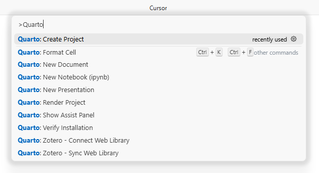
选择Blog Project
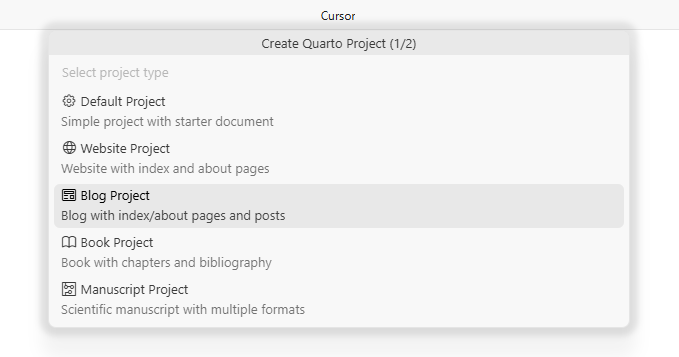
选择一个文件夹作为博客项目的根目录
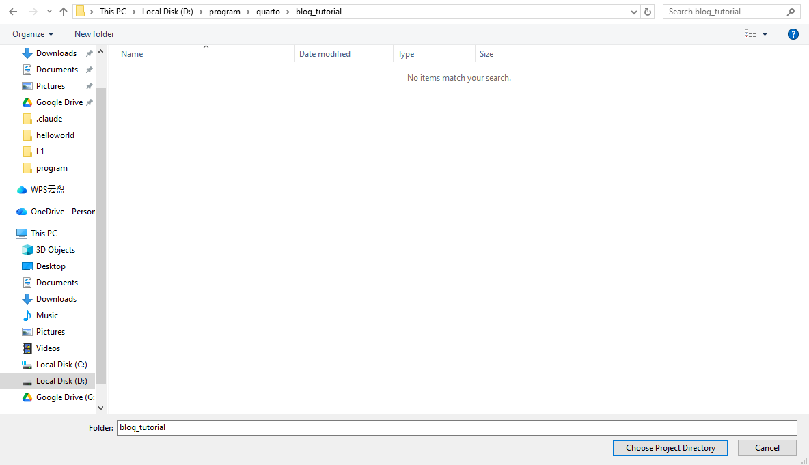
为博客项目起名
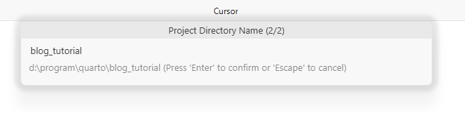
quarto将会创建默认配置以支持博客网站功能
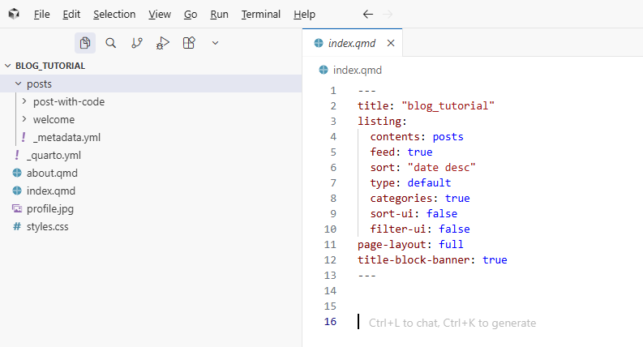
点击右上角“预览”按钮，quarto将为你渲染博客网站
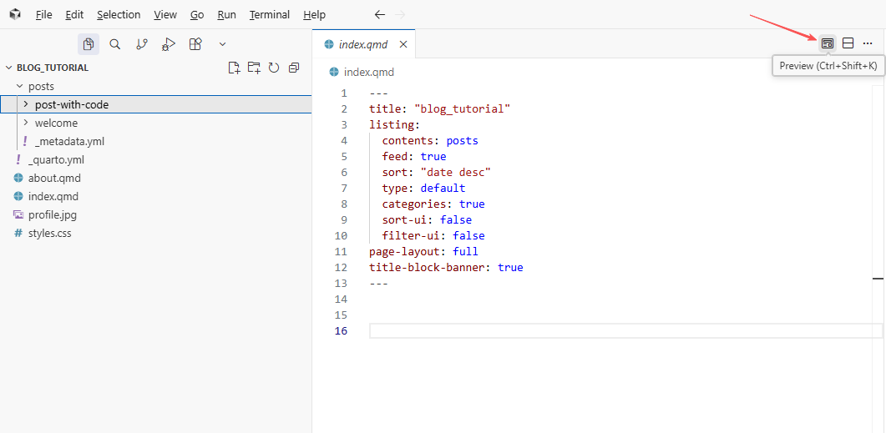
这是在入门博客项目中创建的关键文件摘要：
| 文件 | 描述 |
|---|---|
_quarto.yml |
Quarto 项目文件 |
index.qmd |
博客主页 |
about.qmd |
关于页面 |
posts/ |
包含文章的目录 |
posts/_metadata.yml |
posts 的共享选项 |
styles.css |
网站的定制 CSS |
主页预览界面
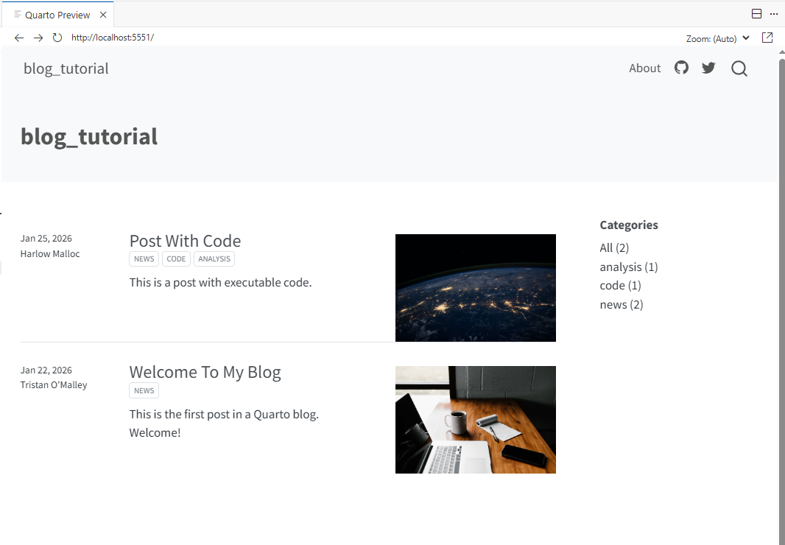
项目文件介绍
主页
主页是关于posts目录下所有博客的文章列表，如主页预览界面所示。
源代码：
---
title: "blog_tutorial"
listing:
contents: posts
feed: true
sort: "date desc"
type: default
categories: true
sort-ui: false
filter-ui: false
page-layout: full
title-block-banner: true
---| 字段 | 描述 |
|---|---|
title |
标题 |
categories |
开启博客分类 |
Categories（分类）
categories: true表示配置为启用分类，这些分类显示在主页的右侧边缘。
分类从包含在列表中的文档的前置内容中读取。例如，这里是一个包含分类的样本帖子元数据：
---
title: "Post With Code"
description: "Post description"
author: "Fizz McPhee"
date: "5/22/2021"
categories:
- news
- code
- analysis
---关于页面
about.qmd包含有关博客及其作者的更多信息。
about.qmd源代码可能的样子：
---
title: "About"
image: profile.jpg
about:
template: jolla
links:
- icon: twitter
text: Twitter
href: https://twitter.com
- icon: linkedin
text: LinkedIn
href: https://linkedin.com
- icon: github
text: Github
href: https://github.com
---
About this blogposts文件夹
构成博客内容的帖子位于posts目录中。
通过在posts内创建一个子目录，并向该目录添加一个index.ipynb（或是 index.qmd）文件来为你的博客添加一篇新帖子。这个文件就是新的博客帖子，当你渲染(quarto render)它时，博客主页将自动更新，在列表顶部包含最新的帖子。
发布（Publishing）
有多种方式发布Quarto博客。本文仅介绍基于GitHub Action的GitHub Pages发布方式。
- 在github创建新仓库
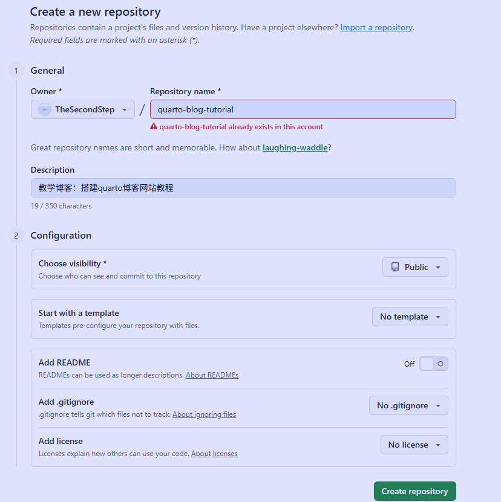
本地项目初始化并关联github仓库
- 创建README.md文件，内容为
# 你的仓库名 - 创建.gitignore文件
/.quarto/ /_site/- 修改
_quarto.yml中site-url为你的仓库地址 - 提交修改并关联远端仓库
git init git add . git commit -m "first commit" git branch -M main git remote add origin git@github.com:TheSecondStep/quarto-blog-tutorial.git git push -u origin main- 创建README.md文件，内容为
本地执行一次命令行
quarto publish gh-pagesquarto将为你创建gh-pages分支，用于GitHub Pages部署网站使用。部署GitHub Action GitHub Action可以支持在
main分支修改上传代码到github仓库后，自动触发工作流，渲染博客网站并更新。创建
.github/workflows/publish.yml，内容如下on: workflow_dispatch: push: branches: main name: Quarto Publish jobs: build-deploy: runs-on: ubuntu-latest permissions: contents: write steps: - name: Check out repository uses: actions/checkout@v4 - name: Set up Quarto uses: quarto-dev/quarto-actions/setup@v2 - name: Render and Publish uses: quarto-dev/quarto-actions/publish@v2 with: target: gh-pages env: GITHUB_TOKEN: ${{ secrets.GITHUB_TOKEN }}在github仓库设置的Actions部分的
Workflow permissions勾选Read and write permissions。推送上述修改到github，后续只要手动修改博客并推送到main分支，将自动触发GitHub Action渲染网站。
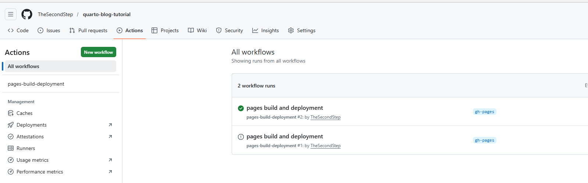
执行代码
GitHub Action也支持配置自动执行代码，来作为作为网站渲染的一部分。
💡 确保你的代码能够在GitHub Action中执行成功的最佳实践是通过虚拟环境管理，如venv
本文以uv管理venv虚拟环境为例，确保你的本地环境已经通过虚拟环境管理python代码且同步到GitHub
修改publish.yml，然后推送到远端分支
on:
workflow_dispatch:
push:
branches: main
name: Quarto Publish
jobs:
build-deploy:
runs-on: ubuntu-latest
permissions:
contents: write
steps:
- name: Check out repository
uses: actions/checkout@v4
- name: Set up Quarto
uses: quarto-dev/quarto-actions/setup@v2
- name: Install uv
uses: astral-sh/setup-uv@v5
with:
enable-cache: true
python-version: '3.13' #你的虚拟环境的python版本
- name: Install Dependencies
run: |
uv sync
- name: Render and Publish
uses: quarto-dev/quarto-actions/publish@v2
with:
target: gh-pages
env:
GITHUB_TOKEN: ${{ secrets.GITHUB_TOKEN }}
QUARTO_PYTHON: .venv/bin/python添加评论区
若思想没有回响，文字便只是一场永无止境的独白；评论区并非点缀，而是博客得以呼吸的肺叶。
登录https://giscus.app/zh-CN 并根据指引操作，
giscus是利用GitHub Discussions实现的评论系统，天然与我们这套基于Github的博客系统适配。然后我们会看到类似这么一段配置
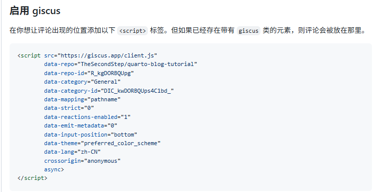
修改
_quarto.yml，加上对应配置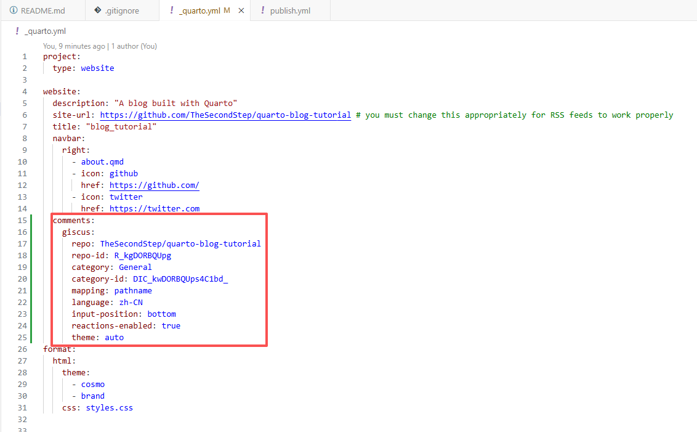
上传所有修改，我们的网站就支持评论功能了
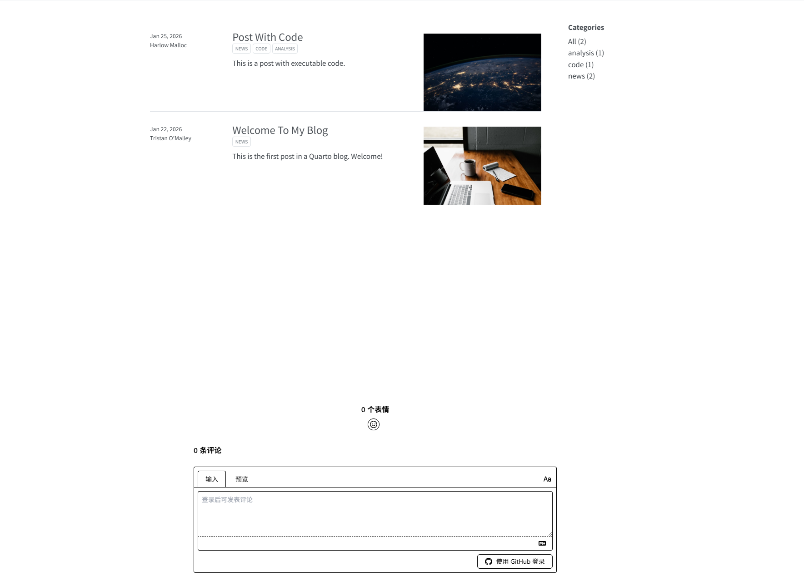
结语
至此，基于Quarto的个人网站已经部署上线，支持通过GitHub Pages访问，通过GitHub Action自动化渲染。
如果你在实际操作中遇到任何问题，欢迎在评论区留言。